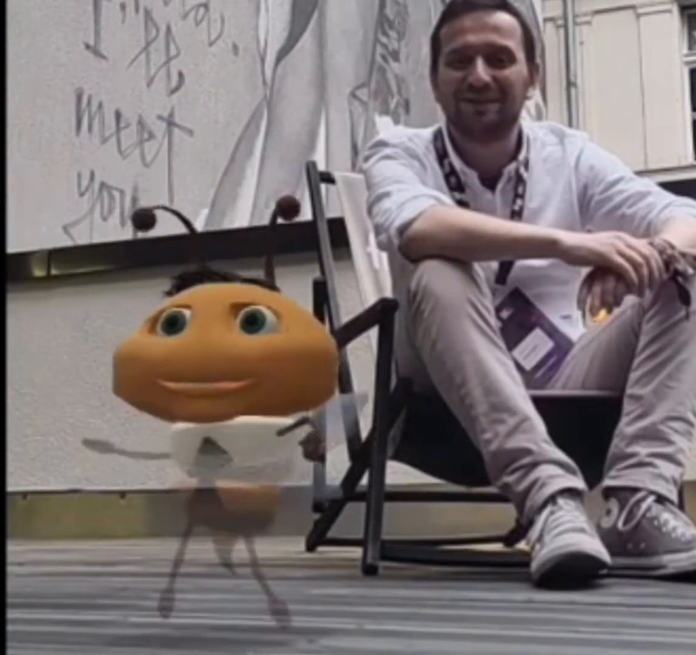

PICO · WebSpatial
Your agents,
Your agents,
out in the real world.
Looka turns your agentic workflow into a spatial companion you can see, place, and talk to.

Spatial Enabled
Looka turns your agentic workflow into a spatial companion you can see, place, and talk to.
